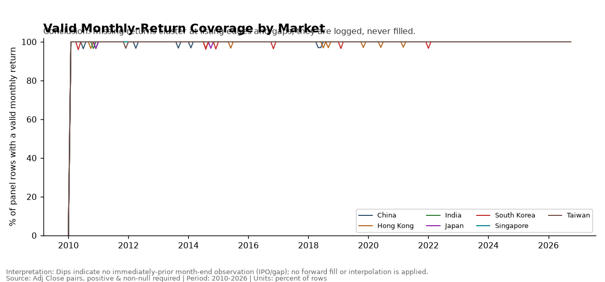
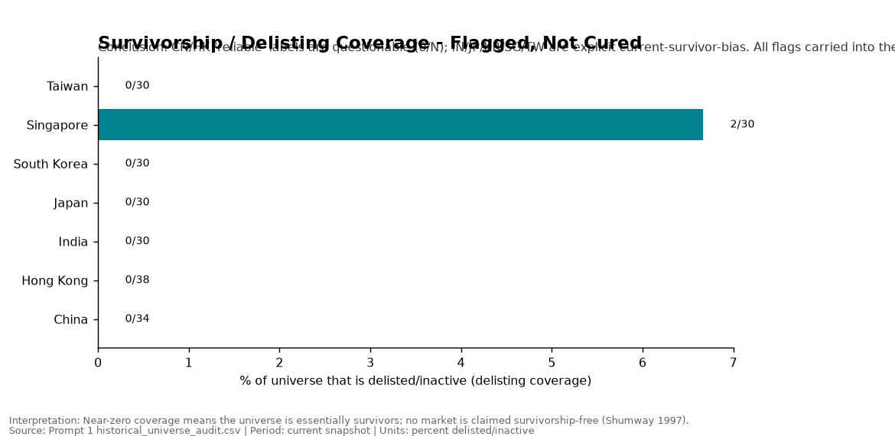
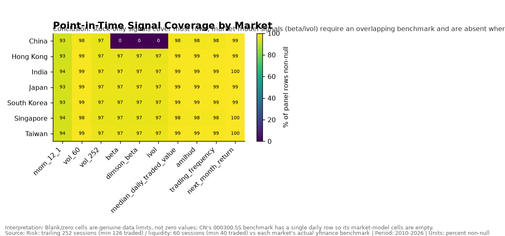

Do Momentum and Low-Risk signals generalize across APAC equities, and can they be translated into an economically useful OOS portfolio?
7 markets
210 stocks
2010–2026 research
2016–2026 OOS / 2026 partial
Momentum + Low Risk
Survivor-biased exploratory sample
A small, pre-specified set of equity return predictors is tested on a monthly
panel of CN, HK, IN, JP, KR, SG and TW, then translated into long-only country-sleeve
portfolios and evaluated out-of-sample in USD, net of illustrative frictions and dated taxes.
Momentum is the strongest signal and the only member of the primary family to survive the
project’s own multiplicity correction; Low Risk lowers realised volatility but its return
premium is inverted in this panel; and the long-only optimizer does not beat equal-weight 1/N
out-of-sample. No result here is a bias-free historical APAC universe, and the sample
carries survivorship bias.
Method note. Displayed “CAGR” is net CAGR from
NetReturn (net of 15 bps friction + dated taxes), not gross CAGR. Benchmark is uncharged
and equal-country across the six available markets because China benchmark history is
inadequate.
Three conclusions
Momentum is the strongest signal and survives the project's own correction.
Pooled country-equal rank IC 0.0331; Fama–MacBeth slope
0.0031 (NW HAC(6) t = 3.30) — the only member of the
four-test primary family that survives the Sidak/Bonferroni correction. Q5−Q1 is positive in
6 of 7 markets (India marginally negative). Net OOS Momentum CAGR
22.6%, Sharpe 1.07.
Low Risk lowers volatility but its premium is inverted in this panel.
LOWRISK IC 0.0022; Fama–MacBeth slope −0.0026
(NW HAC(6) t = −2.31). Q5−Q1 is negative in
7 of 7 markets — high-volatility names out-returned low-vol names. The sleeve's
value is risk reduction, not alpha (12.9% volatility, the lowest of the six).
The optimizer fails to beat 1/N out-of-sample.
Optimized net CAGR 12.5% vs 1/N 15.9%; Sharpe
0.76 vs 0.89; net drawdown worse. A claim of improvement is made
only if OOS net economics improve after the corrected per-one-way turnover charge — here they do
not. Lower volatility (13.9% vs 15.5%) is the sole improvement.
Method pipeline
Ten stages, data to decision. Select a stage for what / formula / why /
literature / method & code.
Data
IDi = ISO3i ∥ MICi ∥ Tickeri ∥ Classi
IDi stable security identifier of name i.
ISO3i ISO 3166-1 alpha-3 country code (CN, HK, IN, JP, KR, SG, TW).
MICi ISO 10383 market-identifier code of the listing venue.
Tickeri vendor ticker symbol.
Classi share-class label (common or other).
∥ string concatenation in the fixed field order shown.
What
yfinance primary OHLCV + actions for 210 common-equity names across CN, HK, IN, JP, KR, SG, TW, 2010-01..2026-10; benchmarks, FX, US risk-free proxy, JKP country factors and French regional factors ingested read-only.
Formula / construct
Raw open/high/low/close, vendor adj_close, dividends, stock_splits; stable id {ISO3}_{MIC}_{TICKER}_{SHARE_CLASS}.
Why
Provenance-first: immutable raw snapshots, labelled sources, no overwrite.
Literature
Ince & Porter (2006) on vendor-data care; Jensen, Kelly & Pedersen (2023) on a common country factor protocol.
ri,t monthly total return of name i in calendar month t.
Padji,t split- and dividend-adjusted close at the month-end of t.
Padji,t−1 adjusted close at the immediately preceding calendar month-end.
Valid only when t−1 is the immediately preceding calendar month; no forward fill, no interpolation.
What
Daily → monthly total returns from Adj Close on actual month-end observations. No forward fill, no interpolation. TRADED / STALE / SUSPENDED states; corporate actions already embedded in Adj Close and never re-applied; fixed lagged bottom-20% liquidity filter; survivorship flagged, never cured.
Formula
monthly_total_return = adj_close_t / adj_close_{t-1} − 1 only where the prior observation is in the immediately preceding calendar month.
Why
Avoid stale/unadjusted vendor prices and survivor-only universes; keep a point-in-time investability gate.
γt control-slope vector; Controls = lagged-return z and log-liquidity z.
δc,t market fixed effect; εi,t+1 residual.
Monthly slopes are averaged; standard errors use Newey–West HAC(6).
What
Monthly cross-sectional OLS of next-month return on within-market standardised mom_z, lowrisk_z and two controls; market fixed effects; mean of monthly slopes with Newey–West HAC(6) standard errors.
JKPc,t value-weighted long–short JKP country factor in decimal excess USD.
SignAgreec mean share of months with the same sign.
Series are joined on exact common month-ends only (n=178 per market).
What
JKP country momentum / low_risk on exact common month-ends (correlation, sign agreement, pre/post-2020). French Mkt-RF market-only cross-check. AQR NOT_AVAILABLE.
Formula
corr(own Q5−Q1, JKP factor) on inner-joined dates; sign agreement = share of same-sign months.
Why
Compare against an independent, globally consistent country factor library.
Literature
Jensen, Kelly & Pedersen (2023); Fama & French (2012).
μ̂i,t forecast next-month return for name i at formation month t.
b̂≤t−1 slope estimate trained only on formation months up to and including t−1.
zi,t contemporaneous within-market standardised signal vector.
Expanding window uses no future values; an inadequate history marks the sleeve-month NA rather than trading.
What
Expanding-window Fama–MacBeth coefficients trained only on past formation months whose next-month return is already realised; forecast = slopes · z_i(t). If history is inadequate the sleeve-month is not traded (marked NA, no silent fallback).
Formula
μ_i(t) = slopes(t) · z_i(t).
Why
Strictly past data only; expanding window — no re-selection.
maxw w′μ̂ − λ w′Σ̂ w− η c · 0.5 Σi | wi − w_previ |subject to Σi wi = 1, wi ≥ 0
w long-only weight vector; μ̂ expected returns.
Σ̂ Ledoit–Wolf shrinkage covariance of trailing USD returns.
λ = 5 risk-aversion coefficient; η = 1 turnover-penalty weight.
c one-way cost (15 bps base); w_prev prior-month weights.
Fully invested, non-negative weights solved with SLSQP.
What
Country sleeves built monthly from eligible names, combined equal-country: 1/N, Momentum top quintile, Low Risk top quintile, Composite top quintile, and a long-only mean–variance Optimized sleeve.
Formula
max w·μ − λ w′Σw − η c · 0.5 Σ|w − w_prev| s.t. Σw=1, w≥0, λ=5, Ledoit–Wolf Σ, SLSQP.
Why
Translate statistical signals into investable, fully-invested, long-only portfolios.
TOt = 0.5 Σi | wi,t − wi,t−1 |
Rnet,t = Rgross,t − c · TOt − Taxt
TOt one-way turnover; wi,t weight in name i at month t.
Rgross,t pre-cost monthly return; c one-way friction (15 bps base).
Taxt dated tax applied only where a verified effective date exists.
Dated limit: CN seller stamp 5 bps from 2023-08-28; HK 10 bps per side from 2023-11-17; all other jurisdictions unverified and not applied.
What
Gross plus 5 / 15 / 30 bps one-way friction scenarios; dated CN/HK taxes applied only where an effective date is verified; one-way turnover 0.5·Σ|Δw|; country risk contribution from the sleeve-return covariance.
Formula
Net = Gross − turnover·friction − dated_tax.
Why
Rest the conclusion on net economics, not gross.
Literature
Frazzini, Israel & Moskowitz (2018); Novy-Marx & Velikov (2016).
Improve indicator equal to 1 when the conjunction holds, else 0.
CAGRopt,net, Sharpeopt,net out-of-sample net statistics of the optimizer.
CAGR1/N,net, Sharpe1/N,net the same for equal-weight 1/N.
Decision rests on OOS net economics, not a nominal t-statistic. Actual result: Improve = 0.
What
Final APAC table; optimizer claim gated on OOS net improvement; multiplicity correction over the small primary family; eight pre-declared robustness families with explicit NA statuses.
Formula
Decision rule = OOS net improvement, not a nominal t-statistic.
Why
Nominal t-stats are not discovery; avoid factor-zoo overclaim.
Price validity by market — invalid prices are flagged, never imputed.

Monthly return coverage — no forward fill; listing edges and gaps stay missing.

Survivorship flags — current-universe bias in all seven markets.

Signal coverage by market — CN beta/IVOL are genuinely NA (one-row benchmark).
The eligible universe is broadly similar across markets
Per-market sample coverage from the cleaning stage: core securities, eligible names, observation months, liquidity-cutoff exclusions and signal coverage. 2010-01..2026-10.
Gross, pre-cost. Eligible = passes the point-in-time listing, signal/risk, liquidity and fixed bottom-20% liquidity-cutoff gates.
Calculation from point-in-time investability and signal-coverage audit
Takeaway. Eligibility is ~73–75% in every market; the fixed liquidity control removes a similar share, and SG runs a smaller sample.
Compounds exactly the 11 monthly total returns t-12..t-2; the most recent month
t-1 is skipped. Built on a gap-aware grid — all 11 cells must be present.
LOWRISK — low volatility
LOWRISK = −vol_60
Annualised standard deviation of daily total returns over 60 traded sessions
(sqrt(252), min 40). Secondary: vol_252, beta, and idiosyncratic
volatility (CN beta/IVOL are NA — the CN benchmark has one row).
Composite — fixed 50/50
0.5·z(MOM) + 0.5·z(LOWRISK)
A transparent combined score, fixed ex ante and not re-optimised on history.
Z-scores are cross-sectional within market-month.
Signal testing
Rank IC, quintile spreads and pooled Fama–MacBeth. Evidence is gross /
pre-cost at this stage.
Rank IC is positive for Momentum, near zero for Low Risk
Country-equal Spearman IC, monthly, 2011-02..2026-09 (not annualised). Sample: eligible universe, signal and next-month return non-null.
Gross, pre-cost. IC is a rank correlation; monthly values are sign-unstable.
Calculation from monthly within-market Spearman rank correlations
Takeaway. Momentum carries a small but persistent positive rank IC; the low-risk orientation is essentially flat.
Momentum Q5 is highest; Low-Risk Q5 is the lowest-returning bucket
Equal-weight USD mean monthly return by signal quintile within market-month. Q5 = highest expected-return / lowest-risk bucket.
Gross, pre-cost. Long-short Q5−Q1 is distinguished from the implementable long-only Q5 sleeve.
Calculation from market-month quintile sorts and Q5−Q1 spreads
Takeaway. Momentum sorts the right way in most markets; the low-volatility sort is inverted (Q5 below Q1 on average).
Mean monthly cross-sectional slopes with within-market standardisation, market fixed effects and Newey–West HAC(6) t-statistics. 188 valid months.
Error bars are an approximate NW 95% interval computed solely as |slope/t|×1.96; exact NW HAC(6) t shown on hover. Gross, pre-cost.
Calculation from monthly cross-sectional regressions with Newey-West HAC(6)
Takeaway. Only mom_z clears the corrected significance bar; lowrisk_z is negative and does not survive multiplicity.
External validation (JKP)
Jensen, Kelly & Pedersen country momentum and
low_risk factors on exact common month-ends.
Validation, not replication. JKP factors are value-weighted long–short
country factors in decimal excess USD. This project's series are equal-weight,
survivor-biased Q5−Q1 spreads on a 210-name current universe. Methodology, weighting and
units differ, so agreement is corroborating rather than a replication. French is used only for a
market-return cross-check (it carries no momentum/low-risk); the ex-Japan aggregate is not HK/SG.
AQR is NOT_AVAILABLE (not in approved inputs; no network substitute).
Momentum agrees with JKP in most markets; Low Risk agrees in sign but not direction
Paired correlation and sign agreement on exact common dates (n=178 per market), with recorded Full / pre-2020 / post-2020 values.
Controls expose only the recorded Full / Pre-2020 / Post-2020 values — no recomputation, no interpolation.
Calculation from exact-date country-factor validation joins
Takeaway. Momentum correlation is positive and rises post-2020; Low Risk correlations are positive on returns but the project's own premium is inverted.
Out-of-sample construction
Strictly past-information flow. OOS is 2016-01..2026-09, 129 months; 2026 is
a partial year and labelled incomplete throughout.
Past data onlyFormation month t sees only realised history.
Expanding FM forecastsμ_i(t) = slopes(t)·z_i(t); NA rather than a silent fallback.
PortfolioLong-only, fully invested; turnover penalty uses the same per-one-way convention as realised costs.
Future periodWeights formed at end of t earn realised month t+1.
Objective:
max w·μ − λ w′Σw − ηcΣ|w−w_prev|,
λ=5, η=1, c=15 bps, subject to
Σw=1, w≥0. The benchmark is 6-market (HK, IN, JP, KR, SG, TW)
because the CN benchmark has only one row and no synthetic China is created.
Literature: Markowitz (1952); Ledoit & Wolf (2004); DeMiguel, Garlappi & Uppal (2009); trading-cost references as recorded in project docs.
Net Momentum compounds far above the benchmark; 2026 is partial
Cumulative wealth from 1.0, OOS 2016-01..2026-09. Strategies are net of 15 bps + dated taxes; benchmark is uncharged.
Calculation from monthly OOS USD returns net of 15 bps and dated taxes (benchmark uncharged)
Takeaway. Momentum ends clearly ahead of 1/N and the benchmark; the rank order is stable through the pandemic and 2022 drawdown.
Low Risk and the optimizer draw down less than Momentum
Running net drawdown (wealth vs prior peak), OOS 2016-01..2026-09. Lower is worse.
Net status: strategies net; benchmark uncharged. 2026 partial.
Calculation from monthly OOS USD returns net of 15 bps and dated taxes (benchmark uncharged)
Takeaway. Net maximum drawdown is worst for the benchmark and shallowest for 1/N and the optimizer.
Rolling 12-month total net return
Trailing 12-month compounded net return, OOS 2016-01..2026-09. Every
post-2020 window is positive for Momentum.
Rolling 36-month Sharpe is omitted because no exact canonical
risk-free merge is safely reconstructible from existing outputs without re-running empirical code.
A recorded gross-vs-net comparison is provided in the costs section instead. 2026 partial.
Calculation from monthly OOS USD returns net of 15 bps and dated taxes (benchmark uncharged)
Takeaway. Trailing-year returns swing widely around the 2018/2022 drawdowns; no sleeve escapes them.
Key results
Exact canonical values. Portfolio metrics are OOS net; signal tests are gross.
Low Risk volatility12.9%lowest of six; risk reduction, not alpha
1/N net CAGR15.9%Sharpe 0.89 · MaxDD −20.5%
Optimized net CAGR12.5%Sharpe 0.76 vs 1/N 0.89 — no OOS economic win
Momentum leads on net CAGR and Sharpe; 1/N beats the optimizer
Select a metric across the six portfolios. “Net CAGR” uses
NetReturn (net of 15 bps + dated taxes), not gross CAGR.
OOS net 2016-01..2026-09; benchmark uncharged. 2026 partial.
Calculation from net OOS portfolio performance statistics
Takeaway. Net of costs, Momentum wins on return and risk-adjusted return; the optimizer improves only volatility.
Annual net returns by portfolio (2026 partial)
Canonical net 15 bps + dated-tax annual returns. 2018 and 2022 are
negative for all sleeves; 2026 covers 9 months and is marked partial.
Net status: all strategy cells net; benchmark uncharged. 2026 = 9 months (partial).
Calculation from calendar-year compounding of monthly net OOS returns
Takeaway. Momentum's edge is concentrated in 2017, 2020 and 2021; down years hit every sleeve.
Country exposure is near-equal; KR contributes the most risk
Average country sleeve weight by portfolio, and (portfolio-level) country risk contribution from the sleeve-return covariance.
Equal-country construction; residual variation comes from active-sleeve counts. Risk share sums to 1 across markets.
Calculation from country-sleeve weights and covariance risk decomposition
Takeaway. Portfolios are country-balanced by design; risk is not evenly distributed, with KR the largest contributor.
Costs & robustness
Gross vs 5 / 15 / 30 bps one-way friction; dated taxes only where a
verified effective date exists (CN seller stamp 5 bps from 2023-08-28; HK 10 bps/side from
2023-11-17; all other jurisdictions unverified → not applied).
Swipe table →
Tax coverage — applied only where a verified effective date is recorded
Market
Tax
Rate
Effective
Implemented
CN
Stamp duty (sales)
5 bps sell-side
2023-08-28
months ≥ 2023-08
HK
Stamp duty
10 bps per side
2023-11-17
months ≥ 2023-11
IN
STT
0.1% delivery
—
NO (no verified date)
JP
Financial transaction tax
abolished 0%
1999-04-01
NO (zero rate)
KR
Securities transaction tax
~0.15% sell
—
NO (no verified date)
SG
Stamp duty
0.2% buy
—
NO (no verified date)
TW
Securities transaction tax
0.3% sell
—
NO (no verified date)
Calculation from documented dated tax schedules
Friction erodes but does not reverse the ranking
Gross and 5 / 15 / 30 bps one-way scenarios. Illustrative friction range, not an official figure. Net status: scenarios are net; the benchmark carries none.
Dated CN/HK taxes included in every cost scenario. No cherry-picking of the best scenario.
Calculation from one-way turnover under gross, 5, 15 and 30 bps scenarios
Takeaway. Even at 30 bps, Momentum's net CAGR and Sharpe stay highest; the optimizer never overtakes 1/N.
Calculation from annual gross and 15 bps net portfolio returns
Takeaway. The gross-to-net wedge is modest at 15 bps, but grows with turnover and worsens at 30 bps.
Robustness explorer — all 210 recorded rows
Eight pre-declared families, never selected on Sharpe. status='na' marks an explicit non-result, never a silent skip.
Families: 6-1 momentum; vol_252; bottom 10/20/40% liquidity cutoffs; equal vs liquidity weighting (sensitivity only); developed vs emerging; 2016–2019 vs 2020–2025; survivor sensitivity; country leave-one-out.
Calculation from eight predeclared robustness families
Takeaway. Signs and economic magnitudes are stable across cutoffs and windows; liquidity weighting is a sensitivity, not a factor.
Limitations
Survivor-biased exploratory evidence, not a bias-free historical APAC universe.
Current-universe survivorship in all seven markets. CN and HK carry a questionable label with 0/N delisting coverage; no market is survivorship-free.
Only 210 curated names — not exhaustive historical listings; OOS claims are conditional on this sample.
Incomplete delistings and inert listing/delisting gates (statuses carry no parseable dates).
Single price source for most markets; independent cross-check exists only for CN and HK.
CN beta / IVOL unavailable — the CN benchmark has a single daily row; CN is excluded from market-model signals only.
Incomplete historical taxes — only CN/HK have verified effective dates; all other jurisdictions are not applied.
2026 is partial (9 months) and flagged incomplete throughout.
Method & literature mapping
Populated from LITERATURE_MAPPING.md. Links are limited to DOI
URLs already recorded in the project documents; citations without a recorded link are shown as plain
text — no reference is invented.
Recorded references
Reproducibility
Frozen before empirical calculation; immutable raw design; failed tests are
not hidden; no network.
Specification registry:SPECIFICATION_REGISTRY.csv — 40 specs across 7 categories, each labelled PRIMARY / ROBUSTNESS / EXPLORATORY.
Immutable raw design: raw extractions are never overwritten; processed writes are atomic.
Failed tests not hidden:tests/test_main_empirical.py, tests/test_cleaning.py, tests/test_site.py all run in-repo; explicit NA statuses replace silent skips.
No network at analysis time; every figure is built from recorded canonical outputs.